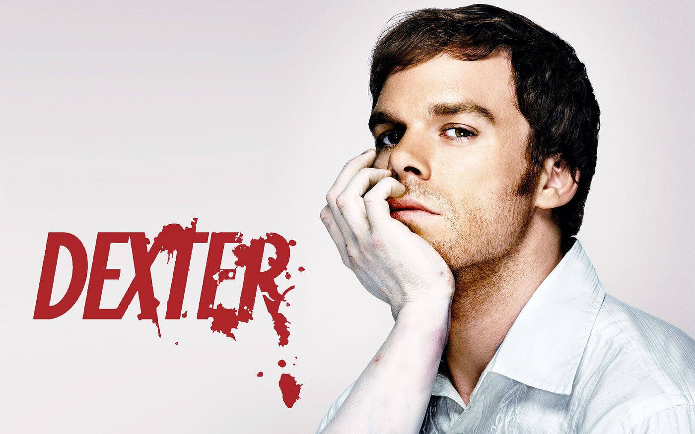

Gilmore Girls
Gilmore Girls is a cozy TV series that follows the close bond between a single mother, Lorelai Gilmore, and her daughter, Rory. Set in the small town of Stars Hollow, the show blends humor, heart, and everyday life. Lorelai is witty, independent, and clashes often with her wealthy parents, adding family tension to the story. Rory is intelligent and ambitious, dreaming of becoming a journalist while navigating school, friendships, and relationships. The town’s eccentric residents add charm and a strong sense of community. The show is known for its fast-paced dialogue and constant pop culture references. Overall, Gilmore Girls explores themes of family, growing up, and finding one’s place in the world.
- Gilmore Girls Wiki
- Witty
- Wholesome
- Nostalgic

Dexter
Dexter is a crime drama series that follows Dexter Morgan, a forensic blood spatter analyst who secretly lives as a serial killer. Working for the Miami Metro Police Department, Dexter uses his position to hide his double life while carefully selecting criminals who have escaped justice. Guided by a strict moral code taught to him by his adoptive father, he only kills those he believes deserve it. The show explores the psychological conflict between Dexter’s dark urges and his desire to appear normal. Tension builds as his relationships with coworkers, friends, and family become increasingly complicated. Each season introduces new threats that challenge Dexter’s ability to stay hidden. Overall, Dexter examines morality, identity, and the fine line between justice and violence.
- Dexter Wiki
- Dark
- Suspenseful
- Pschological
